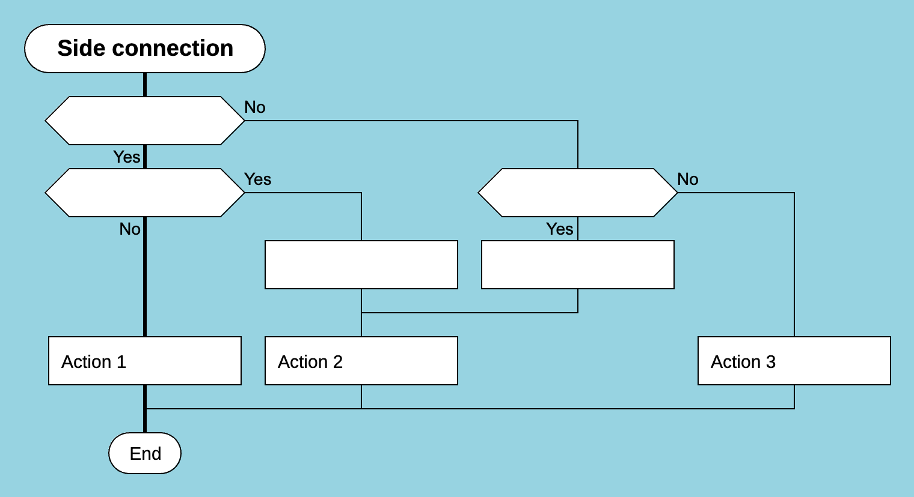
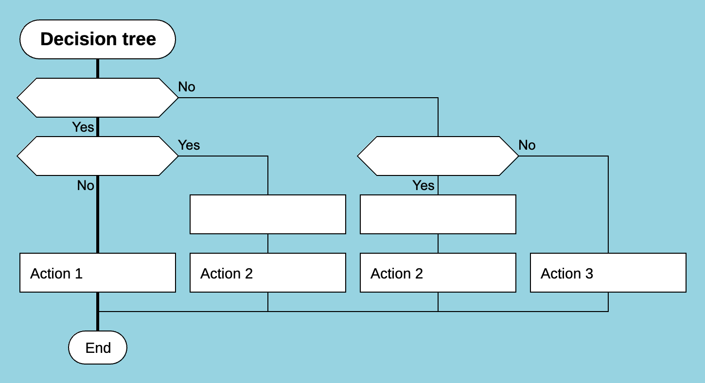

Programming in DRAKON
or How Not to Use DRAKON
DRAKON improves the readability of algorithms, but it does not repeal the general laws of software development.
This article is based on practical experience gained while programming in DRAKON. It summarizes the conclusions the author reached after several years of development using this visual language.
The following software projects related to DRAKON were written fully or partially in DRAKON:
- Drakon Editor. Partially written in Drakon Editor.
- DrakonTech. Written partly in Drakon Editor and partly in DrakonTech.
- DrakonWidget/DrakonHub. Written entirely in DrakonTech.
Draw Simple Diagrams
DrakonTech makes it easy to create DRAKON diagrams quickly. Do not abuse this. Try not to overload your diagrams. DRAKON makes it possible to create understandable algorithms, but it does not guarantee it. Much depends on your sense of proportion.
A few simple recommendations:
Do not allow diagrams to become excessively tall. Long methods are difficult to read in traditional text-based programming. The same applies to excessively tall DRAKON diagrams. If a diagram grows beyond the height of the screen, use decomposition or convert the diagram into a silhouette.
Avoid too many branches in a silhouette. A silhouette does not have to fit on the screen horizontally, although it is good if each individual branch does. However, it is important not to let a silhouette grow endlessly to the right. The number of branches in a silhouette should not be excessive. Ten branches is already dangerous territory. Develop a sense of proportion.
Limit algorithmic complexity. This applies both to primitive diagrams and to silhouette branches. DRAKON presents algorithms in a more understandable way than indented text. Nevertheless, you should direct all your efforts toward eliminating unnecessary complexity. Constantly ask yourself: did I untangle this algorithm or make it more tangled? Did it become clearer or worse?
Avoid excessive line bends and unusual tricks. DRAKON makes it possible to reduce duplication in complex algorithms. Sometimes this is achieved at the cost of additional line bends or unusual connections between elements. Do not try to eliminate duplication at any price. Sometimes repetition is easier for the reader than straining their eyes to understand what a particular visual knot means.
A good DRAKON pattern is a decision tree. An example of a poor pattern is a side connection.


A side connection is acceptable, but it increases the cognitive effort required from the reader.
Follow Standard Programming Practices
Using DRAKON does not mean that you can stop following generally accepted software development practices. All useful programming advice works just as well in visual programming as it does in text-based programming.
Here are some well-known recommendations that also help when creating DRAKON diagrams:
- An algorithm should solve only one problem. When creating a DRAKON diagram, you should clearly understand its purpose. There should be exactly one purpose. The name of the diagram should reflect that purpose. If you cannot explain to your cat what the algorithm does, it is time to decompose it.
- Program top-down. Start with high-level logic and pretend that all subroutines already exist. This will give you a better understanding of the problem at the beginning of the work rather than at the end. You will also get a complete list of the required subroutines together with their names and signatures. Fortunately, DrakonTech can automatically generate an empty function with the required signature through the context menu. Continue in the same way with the subroutines. This approach will probably speed up development by a factor of a hundred. More importantly, top-down design helps capture intent. Clarity of intent is the foundation of maintainable software.
- An algorithm should operate at a single level of abstraction. The actions performed in a diagram should not jump between abstraction levels. If your DRAKON diagram is responsible for controlling dialogs at a high level, it should not contain low-level calls such as
element.style.display = "inline-block"orname.toLowerCase(). It is remarkable how easily violations of abstraction levels destroy the advantages of graphical algorithm representation. - Avoid multiple function calls within a single expression. Ideally, one function call per line of code. Do not be afraid of temporary variables. You will thank yourself during debugging.
- If several actions form a single logical unit, place them in one Action icon. At the same time, follow the general DRAKON rule: one icon — one idea.
Think About Architecture
Using DRAKON does not mean that you can stop thinking. DRAKON can help you arrive at a good architecture because it visually shows what the software does. Nevertheless, the need to think carefully about architecture remains.
Software architecture is a vast subject. Here we will mention only a few considerations that are useful when developing software in DrakonTech.
Avoid giant modules. DrakonTech allows you to work with projects that contain hundreds or even thousands of diagrams. This does not mean that it is easy for a developer to navigate a module that tries to contain everything. A module, like an algorithm, should have a clearly defined area of responsibility.
Visible entry points are the key to success. Every module implements a finite number of algorithms that are invoked from outside. These algorithms rely on the module's private functions. It is critically important to make these entry points easy to find.
To achieve this, place all exported functions in a single folder. A good example is the project root folder or a dedicated folder with a meaningful name such as "API". It is important not to mix public and private functions in the same folder.
User interfaces have an additional type of entry point: callback functions. Callbacks are attached to events generated by the user. Callbacks are full-fledged entry points on par with exported functions. They should always be placed in a separate folder.
Avoid classes that are used only inside a module. Additional layers of encapsulation inside a module often do more harm than good. Excessive encapsulation makes code overly bureaucratic. If a component is used only within its own module, there is no need to turn it into a class.
If you need polymorphism, use other techniques. For example, objects with polymorphic behavior can contain a "type" field. Separately, you can create a dictionary that returns the appropriate function depending on the object type.
The DRAKON language does not require this approach, but techniques like these work well in DrakonTech because DrakonTech encourages a procedural style.
Do Not Edit Generated Code
DrakonTech tries to generate code that is easy to debug. At the same time, you should adopt one iron rule: never manually modify machine-generated code.
Doing so creates two sources of truth. Two truths will inevitably contradict each other, and when they do, they will turn into two lies.
Conclusion
DRAKON is a professional tool, not a magic wand.
It helps make algorithms easier to understand. But that does not mean you can stop thinking. If an algorithm is bad, DRAKON will not make it good. If the architecture is bad, DRAKON will not save it. However, DRAKON makes a good design more visible, and mistakes easier to spot.
Diagrams in DrakonTech are created quickly. Very quickly. There is a temptation to cram everything into a single diagram. Resist that temptation. Ten small diagrams are better than one large and confusing one.
DRAKON does not eliminate the need for architecture. It does not eliminate the need for decomposition. It does not eliminate common sense.
As for drawing diagrams, the main advice is simple: make them simpler. If it seems that you can simplify them even further, you probably can.